Что больше всего запомнилось
Сринагар
Сринигар - кашмирская Венеция, с него начинался наш маршрут. Большой город считающийся столицей Кашмира. Огромное озеро Дал, сотни отелей-лодок, активное движение на воде. Бойкая уличная торговля вечером. Все для туристов, но очень навязчиво. Так активно, как комнату в плавучем отеле Сринагара, мне еще никогда и ничего не пытались продать.
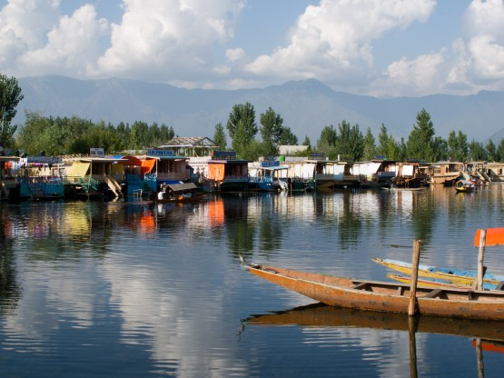
Лодки-отели
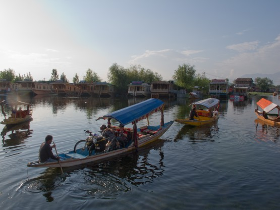
Активное движение
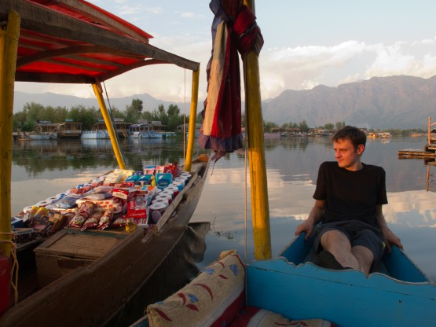
Торговля происходит прямо на воде
Масштабы гор
Гималаи - крыша Мира, самые высокие горы на планете. Любые горы поражают человека своими масштабами и величием, но Гималаи в особой мере. Фотографии не могут передать всей полноты ощущений, но хотя бы часть.
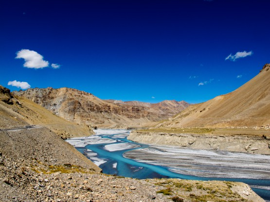
Небо пролившееся рекой
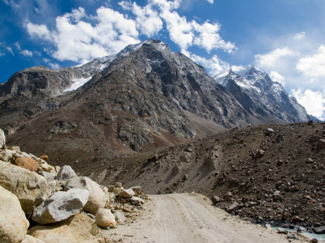
Грунтовка в долине Чандры
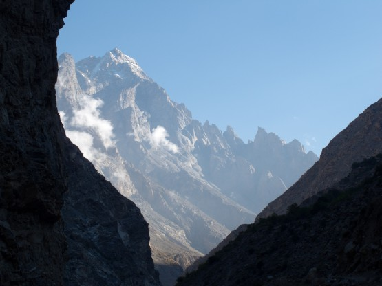
Горы далекие, горы высокие
Долина Чандры
Чандра - местная речка, священная, как и большинство других. Имя это мы хорошо запомнили, но по другой причине. Прочитав описание в книге, ничего страшного от этого участка пути мы не ожидали, и дело скорее не в неточностях описания, а в том, что мы ехали "против шерсти". Если проходить эту долину так, как описано в книге, то, скорее всего, эти грунтовки по валунам особых трудностей не вызовут. В нашем случае 60 километров подъема по камням размером от яблока до чемодана вымотали абсолютно всех.

Начало долины Чандры

трубка гидратора около черепа наводит на грустные мысли -(

Снежная туча переваливает через хребет в долину Чандры
Горные дороги
Мы ожидали, что они будут значительно труднее. В книге описаны многочисленные броды, в отчетах обвалы. . . но по факту все оказалось на редкость гладенько. Больше половины пути асфальт, местами разбитый. Грунтовки с камнями, но сухие. Самое неприятное это пыль и смог от грузовиков, но эта напасть преследовала нас всего 2-3 дня за весь поход. Дороги, по которым мы проехали, считаются стратегические (а других тут нет) и трафик военной техники и грузов по ним весьма приличный. Возможно поэтому и покрытие дорог поддерживают в приличном состоянии. Так что дороги запомнились как шикарные.
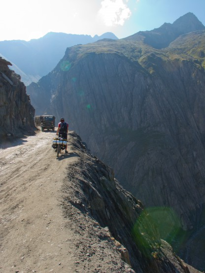
Дорога на перевал
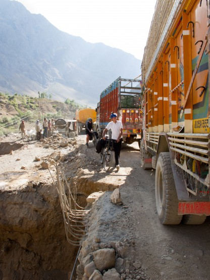
Дорога ремонтируется очень активно
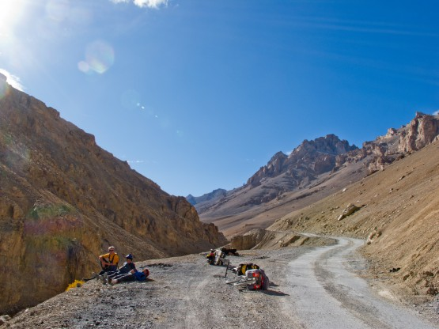
Хорошо, когда нет машин
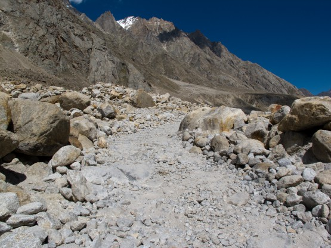
Грунтовка
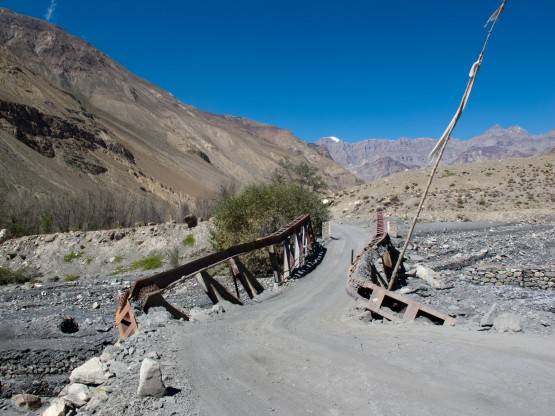
Следуещей весны этот мост не переживет -(
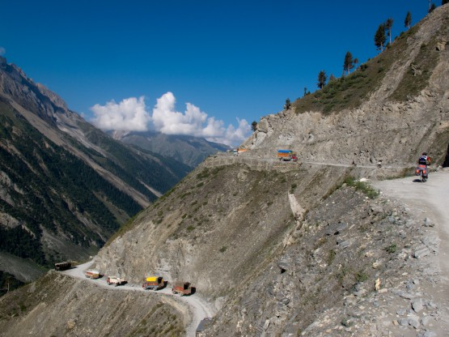
Активное движение
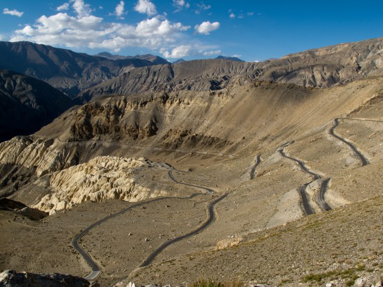
Один из великого множества серпантинов
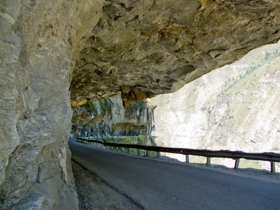
Дорога вырублена в скале
Зона без полиэтилена
Удивительные люди эти индийцы! Живут действительно бедно, но это не мешает им бороться за экологию, например, против использования полиэтилена, проводить соревнования между штатами за чистоту. Причем борьба эта идет далеко не на словах. В лавках отпускают товар в бумажные и целлюлозные пакеты, полиэтиленовых просто нет. Неудивительно, что по берегам горных рек мусор не валяется, да и вообще, первую большую помойку мы увидели уже спустившись с гор.
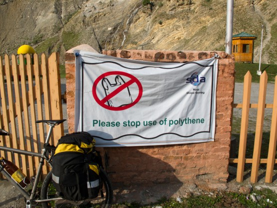
Один из плакатов
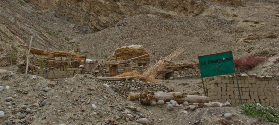
А это уже борьба с курением
Коровы, обезьяны, грифы и прочая живность
Все знают, что корова в Индии священное животное, но предположить, что они такие тощие и питаются картонными коробками, мы просто не могли.
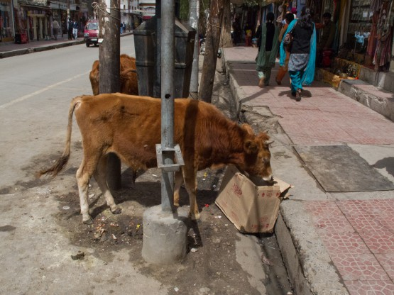
Традиционный рацион священной коровы - картонная коробка
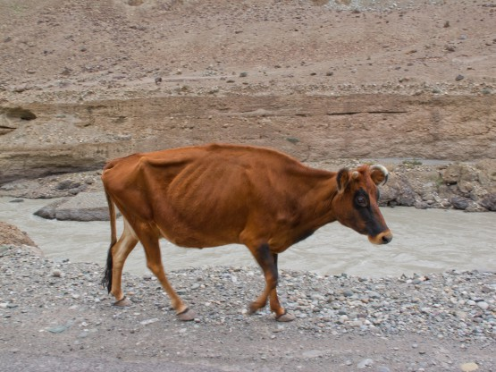
При таком питании большими могут остаться только глаза
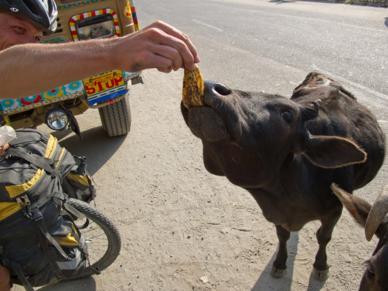
Паша подкармливает несчастных банановыми корками
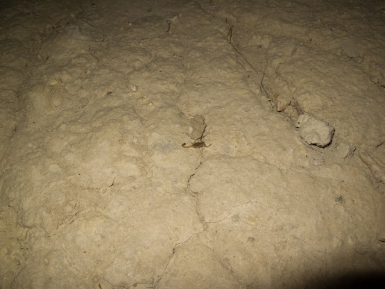
Живность, но не очень приятная
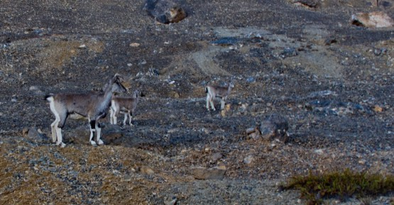
А эти ребята подпустили нас на 20 метров, их явно никто не обижает
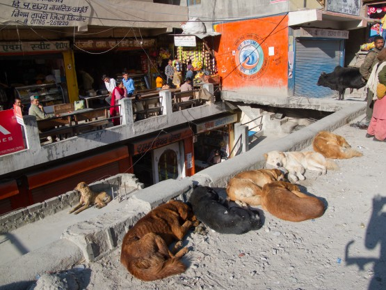
Собак много, но они даже на лают, наверное исповедуют буддизм -)
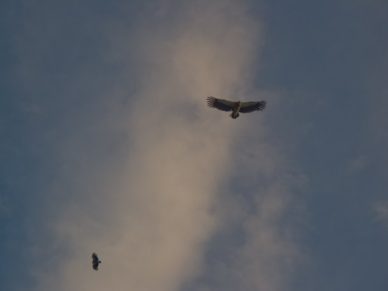
Грифы в небе. Размах крыльев минимум 1.5 метра. Свист ветра в перьях слышен даже внизу
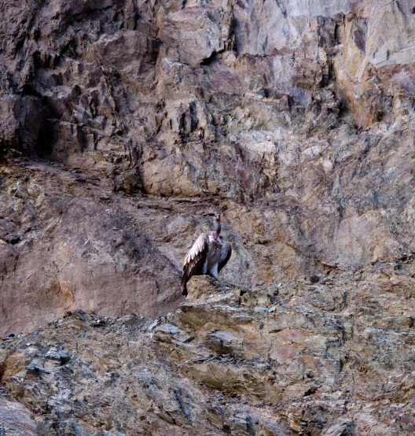
На земле гриф не столь красив
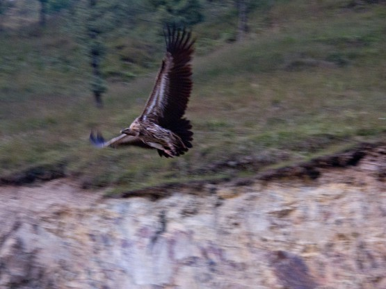
Зато в полете впечатляет
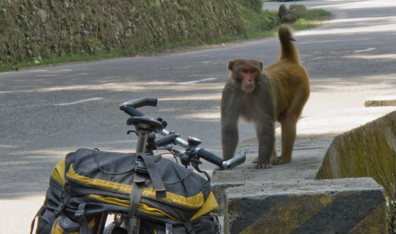
Примеряется -)
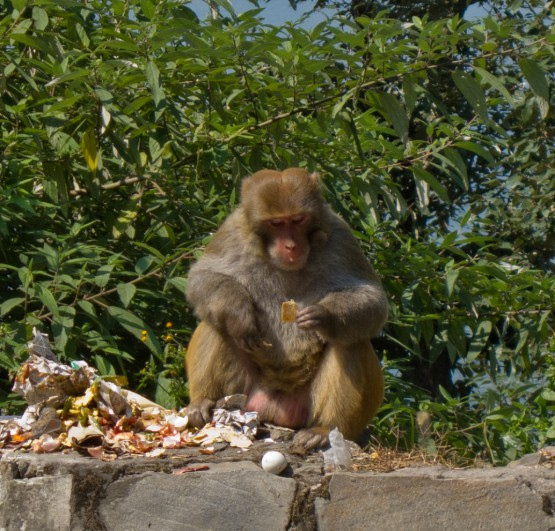
Вкуснятина